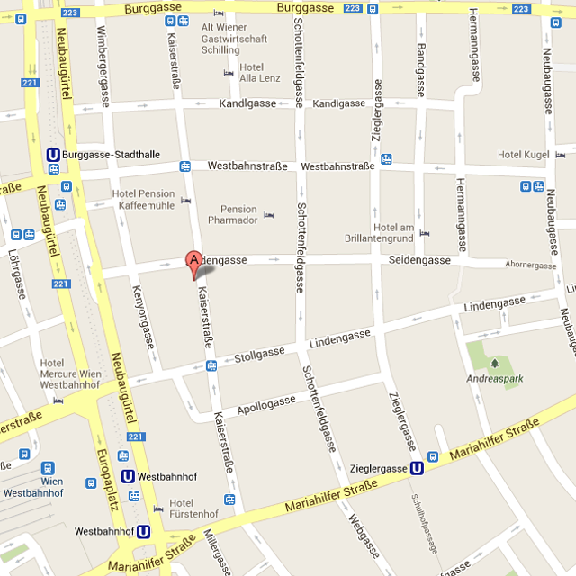

  <article id="article-anfahrt">

    <section id="section-anfahrt" class="aktiv">
      <figure class="image">
        
      </figure>
      
      <div class="description">
        <div>
          <h2>Anfahrt</h2>
          
          <div class="spacer"></div>

          <figure>
            <figcaption>Sie er<wbr>rei<wbr>chen unsere Ordi<wbr>nation öffent<wbr>lich</figcaption>
            <ul>
              <li>
                mit der Straßen<wbr>bahn Linie 5 - Halte<wbr>stelle Stoll<wbr>gasse oder West<wbr>bahn<wbr>straße
              </li>
              <li>
                mit den Straßen<wbr>bahnen Linie 6, 9, 18, 52 und 58 - Halte<wbr>stelle West<wbr>bahn<wbr>hof
              </li>
              <li>
                mit den U-Bahnen Linie U3 und U6 - Halte<wbr>stelle West<wbr>bahn<wbr>hof
              </li>
            </ul>
          </figure>

          <div class="small-gap"></div>

          <figure>
            <figcaption>
              Wenn Sie mit dem Auto kommen, be<wbr>achten Sie die Kurz<wbr>park<wbr>rege<wbr>lung für den 7. Bezirk (Park<wbr>pickerl). <br>
              Park<wbr>garagen:
            </figcaption>
            <ul>
              <li>Lugner-<wbr>Garagen Kaiser<wbr>str. 45</li>
              <li>Apollo-<wbr>Garage Apollog. 11-13</li>
              <li>Park<wbr>platz 'la stafa' Kaiser<wbr>str. 7</li>
            </ul>
          </figure>
        </div>
      </div>
    </section>

  </article>
